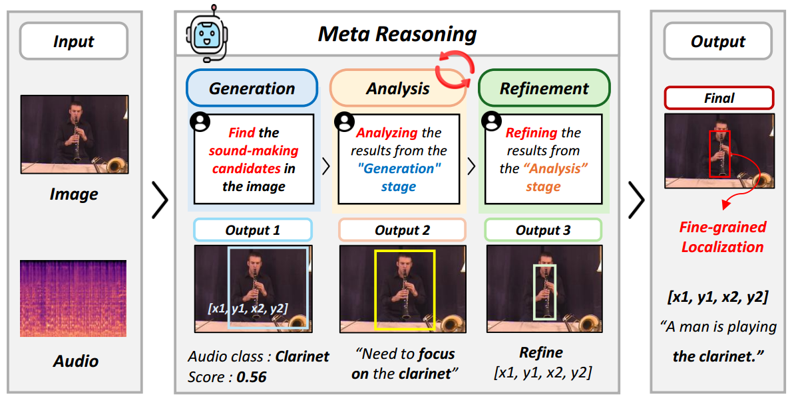
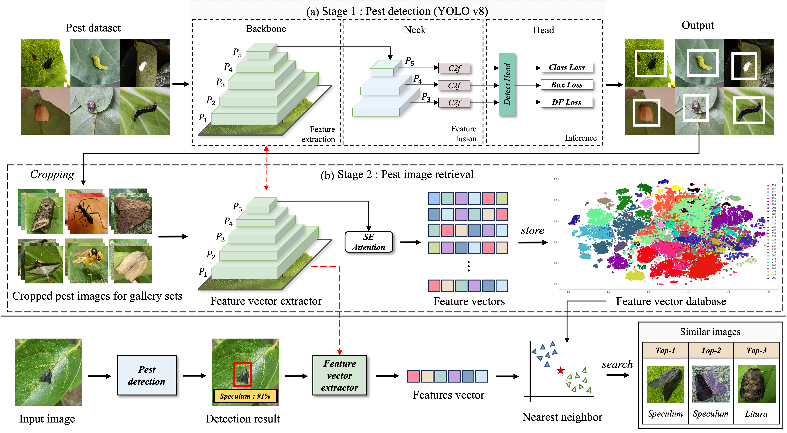

RESEARCH
Publications
Generate, Analyze, and Refine: Training-Free Sound Source Localization via MLLM Meta-Reasoning
CVPR, 2026

PestDetectSim: An Integrated Approach for Crop Pest Diagnosis Using Object Detection and Similarity-Based Image Retrieval
Plant Methods, Springer, 2026

TBA
TBA